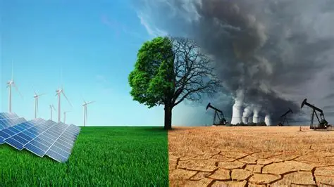

ระบบนิเวศและการเปลี่ยนแปลงของสิ่งแวดล้อม
ระบบนิเวศ (Ecosystem) หมายถึง ระบบความสัมพันธ์ระหว่างสิ่งมีชีวิตกับสิ่งไม่มีชีวิตในบริเวณหนึ่ง โดยมีการถ่ายทอดพลังงานและหมุนเวียนสารระหว่างองค์ประกอบต่าง ๆ องค์ประกอบของสิ่งมีชีวิตในระบบนิเวศแบ่งเป็นผู้ผลิตที่สร้างอาหารได้เองด้วยการสังเคราะห์แสง เช่น พืชสีเขียว ผู้บริโภคที่ได้รับพลังงานจากการกินสิ่งมีชีวิตอื่น และผู้ย่อยสลายที่ย่อยสลายซากสิ่งมีชีวิตให้กลายเป็นสารขนาดเล็ก พลังงานในระบบนิเวศเริ่มต้นจากดวงอาทิตย์และถ่ายทอดผ่านห่วงโซ่อาหาร เช่น หญ้า → ตั๊กแตน → กบ → งู → เหยี่ยว โดยพลังงานบางส่วนจะสูญเสียไปในรูปความร้อนในแต่ละระดับ สิ่งแวดล้อมสามารถเปลี่ยนแปลงได้จากทั้งปัจจัยธรรมชาติและกิจกรรมของมนุษย์ เช่น น้ำท่วม ภัยแล้ง การตัดไม้ทำลายป่า และการปล่อยก๊าซเรือนกระจก การเปลี่ยนแปลงเหล่านี้อาจทำให้สิ่งมีชีวิตสูญเสียแหล่งที่อยู่อาศัยหรือมีจำนวนประชากรลดลง การรักษาระบบนิเวศจึงทำได้โดยลดการใช้ทรัพยากรอย่างสิ้นเปลือง คัดแยกขยะ ลดการใช้พลาสติก ปลูกต้นไม้ และใช้พลังงานอย่างมีประสิทธิภาพ เพื่อรักษาสมดุลของระบบนิเวศให้กับคนรุ่นต่อไป